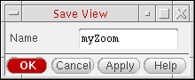
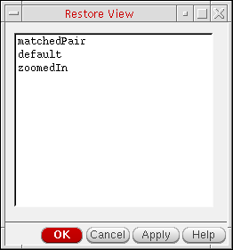

Saving and Restoring Views
-
Choose View – Save/Restore – Save View.
The Save View form appears. - In the Name field, type a name for your view.
- Click OK.
Restoring a Saved View
-
Choose View – Save/Restore.
The Restore View form appears. - Select the view you want to restore.
-
Click OK.
The program restores the selected view.
Restoring the Previous View
Restoring the Next View
Related Topics
Return to top